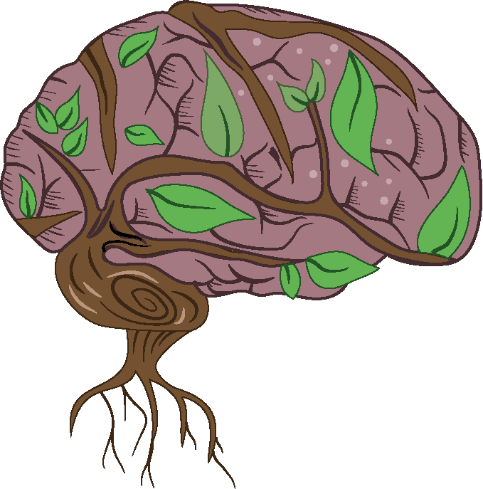

Sobre mí

Soy ilustrador en formación y diseñador editorial. Estudio en la Escuela Superior de Artes Débora Arango. Exploro el arte digital, lo abstracto y técnicas experimentales. Mi trabajo busca conectar naturaleza, poesía y tecnología visual.
Galería


Contacto
Escríbeme a: tabcuart.22@gmail.com
Sígueme en redes: